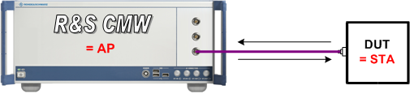
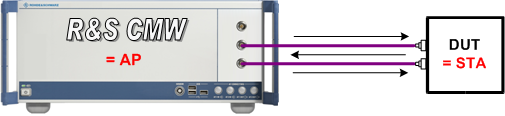
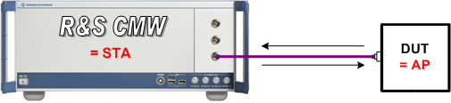
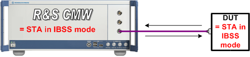
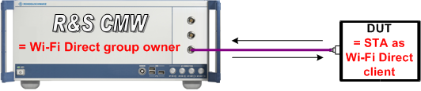
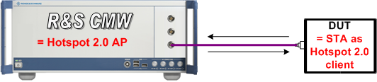

Connect the device under test (DUT) to one or two of the bidirectional RF COM connectors at the front panel of the R&S CMW. No additional cabling and no external trigger are needed. The input level ranges of all RF COM connectors are identical.
See also: "RF Connectors"
The following sections refer to the individual operation modes.
The R&S CMW simulates a WLAN access point in infrastructure mode. The DUT is a WLAN station.
The standard cell scenario (SISO) uses a single RF COM connector.

The MIMO scenario typically uses two RF connectors and RF cables.

The R&S CMW simulates a WLAN station. The DUT is a WLAN access point.

The R&S CMW simulates a WLAN station in IBSS (ad hoc) mode. The DUT is also a WLAN station in IBSS mode.

The R&S CMW simulates a Wi-Fi Direct group owner. The DUT is a Wi-Fi Direct client. Option R&S CMW-KS660 is required.

The R&S CMW simulates a Wi-Fi Hotspot 2.0 access point. The DUT is a WLAN station. Option R&S CMW-KS660 is required.
